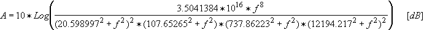

DSP_ASSIGN_FILTER
This API generates a specified filter transfer function spectrum.
The API fills result with the filter transfer function that is
specified by filter_type. result can be used as the
filter_array parameter in functions such as DSP_SPECTRUM,
DSP_SNR, DSP_SND and DSP_THD.
The API fills result with elements corresponding to frequencies up to the Nyquist frequency, and the frequency step in result is calculated as follows:
Frequency step = sampling_frequency / (size × 2).
This API is defined in the header file /opt/hp93000/soc/prod_com/include/MAPI/libdsp.h.
Syntax
DSP_ASSIGN_FILTER(ARRAY_D& result, DOUBLE s_freq,
INT filter_type);
DSP_ASSIGN_FILTER(DOUBLE *result, INT size,
DOUBLE s_freq, INT filter_type);I/O |
Parameter |
Description / Range |
|---|---|---|
O |
result |
Transfer function |
I |
size |
Number of elements to be returned to result 4 ≤ size ≤ 2097152 size ≤ (size of result) |
I |
s_freq |
Sampling frequency of filtered signal Unit: Hertz |
I |
filter_type |
Transfer function filter. Its value can be:
|

Example
DOUBLE time_array[1024], array2[512], filter_array[512];
:
:
DSP_ASSIGN_FILTER(filter_array, 512, 8000, C_MESSAGE);
DSP_SPECTRUM(time_array, array2, 1024, VOLT, 1.0, RECT, filter_array);DSP_ASSIGN_FILTER fills filter_array with the C-message transfer function for frequencies up to 8000 / 2 = 4000 Hz at frequency steps of 8000 / (512 × 2) Hz. Then, filter_array is used in DSP_SPECTRUM.